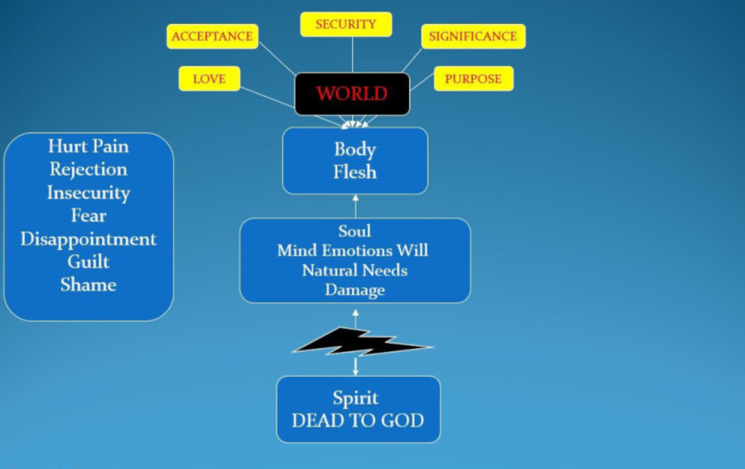
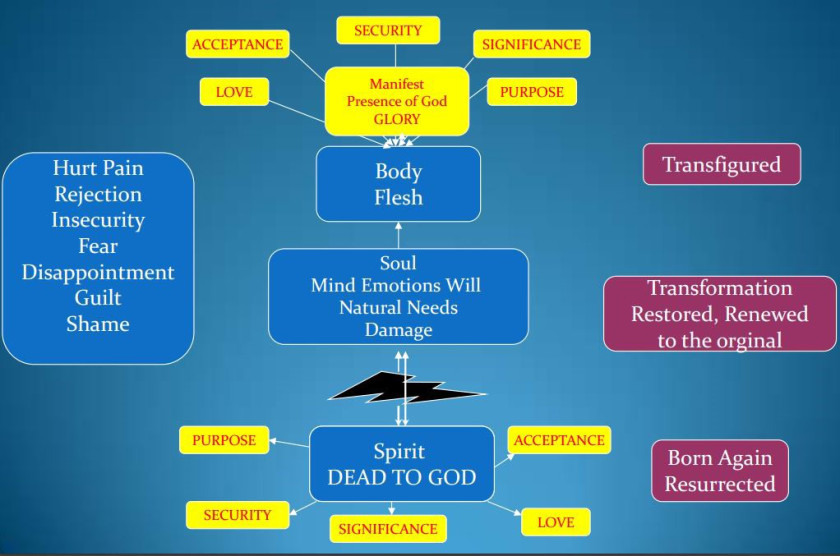

Living Relationship
Listen to the sermon:
A Living Sacrifice
1 Therefore, I urge you, brothers and sisters, in view of God’s mercy, to offer your bodies as a living sacrifice, holy and pleasing to God—this is your true and proper worship. 2 Do not conform to the pattern of this world, but be transformed by the renewing of your mind. Then you will be able to test and approve what God’s will is—his good, pleasing and perfect will. Rom 12:1-2 NIV
Common blockages
- Sin: unforgiveness, rebellion, independence, self-centredness.
- Strongholds: mind-sets, beliefs, lies.
- Negative emotions: fear, doubt, unbelief.
- Demonic: familiar spirits, generational spirits.
- Deception, confusion, control.
- Mind gate: strongholds, words spoken, words received, curses, fear, false doctrines
- Imagination gate: images seen or imagined, TV, films, books, fantasy, games, internet
- Emotions gate: rejection, disappointments, unforgiveness, betrayal
- Conscience: sin, deception, pride, independence, judgement, criticism, defensiveness
Unmet needs affect our soul's desires and motives. Unhealed hurts affect our emotions. Unresolved issues affect our trust and foster doubt. Sin and rebellion will dull our conscience so that things no longer seem wrong, so that we become comfortable with our weaknesses and patterns of sin, and eventually they seem to us to be normal, acceptable behaviours.


1 Beloved friends, what should be our proper response to God’s marvellous mercies? I encourage you to surrender yourselves to God to be his sacred, living sacrifices. And live in holiness, experiencing all that delights his heart. For this becomes your genuine expression of worship. 2 Stop imitating the ideals and opinions of the culture around you, but be inwardly transformed by the Holy Spirit through a total reformation of how you think. This will empower you to discern God’s will as you live a beautiful life, satisfying and perfect in his eyes. Rom 12: 1-2 TPT
Rom 12:1 Live consistent with who you really are, inspired by the loving kindness of God. My brothers, the most practical expression of worship is to make your bodies available to him as a living sacrifice; this pleases him more than any religious routine. He desires to find visible, individual expression in your person. Rom 12:2 Do not allow current religious tradition to mould you into its pattern of reasoning. Like an inspired artist, give attention to the detail of God’s desire to find expression in you. Become acquainted with perfection. To accommodate yourself to the delight and good pleasure of him will transform your thoughts afresh from within. Mirror Bible
14 For this reason I kneel before the Father, from whom every family in heaven and on earth derives its name. I pray that out of his glorious riches he may strengthen you with power through his Spirit in your inner being, so that Christ may dwell in your hearts through faith. And I pray that you, being rooted and established in love, may have power, together with all the Lord's holy people, to grasp how wide and long and high and deep is the love of Christ, and to know this love that surpasses knowledge—that you may be filled to the measure of all the fullness of God. 20 Now to him who is able to do immeasurably more than all we ask or imagine, according to his power that is at work within us, to him be glory in the church and in Christ Jesus throughout all generations, for ever and ever! Amen. Eph 3:14-21 NIV
- We have the Holy Spirit of Truth in us and with us as our guide.
- We have Jesus the way, truth and life in us and with us to disciple us. Co-heirs with Him.
- We have our loving Father in us and with us to Father us into sonship.
- Agape love / God’s nature should be what we use to measure and test everything against.
How can we open our gates?
How can we keep them open?
Whatever it is that has blocked our gate(s), we must own, confess, repent of, and renounce. As we apply the blood of Jesus, there is no guilt, shame or condemnation for us: we receive forgiveness and cleansing. Cleansing the gateways by the blood of Jesus is essential to fully opening the flow.
Step 1: Open the gate of first love
This gate is often most damaged by our natural experiences of hurt, pain and rejection. Renouncing inner vows, repenting of fear and forgiving hurts, we invite Him into our spirit and out through our soul and body by deliberately opening the door. Jesus is knocking: the door handle is on our side and it is up to us to open it (Rev 3:20). We give God first love, first place, first priority
Scripture quotations marked (NIV) are taken from the Holy Bible, New International Version®, NIV®. Copyright © 1973, 1978, 1984, 2011 by Biblica, Inc.™ Used by permission of Zondervan. All rights reserved worldwide. www.zondervan.com The "NIV" and "New International Version" are trademarks registered in the United States Patent and Trademark Office by Biblica, Inc.™
Scripture quotations marked TPT are from The Passion Translation®. Copyright © 2017, 2018 by Passion & Fire Ministries, Inc. Used by permission. All rights reserved. ThePassionTranslation.com.